Pràctica 2. Creació de la màquina virtual
Un cop instal·lat el VirtualBox, el primer pas consisteix a definir les característiques de l'ordinadors virtual on volguem instal·lar el sistema operatiu.
Aquesta operació és similar a anar a comprar un PC a una botiga: hem de decidir quina quantitat de memòria RAM li posem, quin tipus de processador, quina configuració de la BIOS, quina targeta gràfica i de xarxa, capacitat de les unitats de disc, unitats de CD/DVD, ports sèrie, ports USB, etc.
Cal tenir en compte que els recursos destinats a l'ordinador virtual es trauran sempre de l'ordinador anfitrió. Dit d'una altra manera, tota la memòria RAM que assignem a la màquina virtual s'haurà de restar de la memòria disponible per a les altres aplicacions que estiguin en funcionament al nostre ordinador.
Creació bàsica de la màquina virtual.
Primer farem la definició general, seguin els passos que ens dona el programa, més endavant farem unes petites modificacions.
Pas 1. Un cop hem posat en funcionament el programa premem sobre Nueva.
Pas 2. Ens demana el nom de la màquina. Per exemple Linkat EDU 12.04. Aquí triarem el tipus de S.O. en aquest cas Linux i la versió Ubuntu.
Pas 3. La memòria que volem que tingui la màquina. El mínim és 512 KB, si podem li assignarem 1024 KB, però mai més de la meitat de la màquina real, ja que hem de deixar una bona part perquè puguin funcionar totes dues bé
Pas 4. Triarem crear un disc dur virtual.
Pas 5. Agafarem el tipus per defecte un VDI.
Pas 6. Triarem la ubicació dinàmica. Amb això aconseguim que no ens ocupi tota la grandària que triem del disc dur, sinó que crei un fitxer i aquest va creixent a mesura que necessita més espai. Si triem mida fixa, ens generarà un fitxer de la mida del disc dur, a no ser que ens sobri molt d'espai, jo no el recomano.
Pas 7. Mida del disc dur. D'estrada el sistema operatiu no ocuparà més enllà dels 4 GB, però es convenient pensar que hi afegirem aplicacions i documents, per tant pensem en un disc dur mínim d'uns 20 GB. De totes maneres com hem dit que tingues una ubicació dinàmica, no els ocuparà ni molt menys al nostra disc dur.
Ja tenim la nostra màquina disponible, però abans de començar modificarem alguns paràmetres per millorar el seu funcionament.
A les imatges de sota, podeu veure aquestes passes en detall.
Creació de la màquina
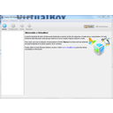
Pas 1. Un cop hem posat en funcionament el programa premem sobre Nueva.- Pas 2. Ens demana el nom de la màquina
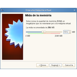
Pas 3. La memòria que volem que tingui la màquina. Mínim és 512 KB.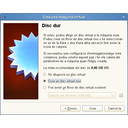
Pas 4. Triarem crear un disc dur virtual.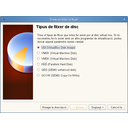
Pas 5. Agafarem el tipus per defecte un VDI.- Pas 6. Triarem la ubicació dinàmica.
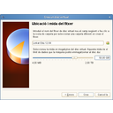
Pas 7. Mida del disc dur. 50 GB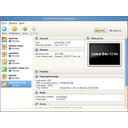
Ja tenim la nostra màquina disponible.


Retoc de la màquina
Anem a veure alguns paràmetres que si modifiquem, farà que la nostra màquina vagi millor. Per accedir-hi seleccionem la màquina i premem a sobre de paràmetres.
Seleccionem la màquina i premem a sobre de paràmetres.
Pas 1. A la opció General no tocarem res.
Pas 2. Al sistema triarem la pestanya Processador i activarem el PAE.
Pas 3. A la opció Pantalla, incrementarem la memòria de vídeo fins el màxim 128 MB. Ajudarà que es vegi millor i puguem treballar bé.
Pas 4. A la opció Emmagatzematge, triarem el lloc on tenim la imatge de linkat per instal·lar. Ho podem fer més endavant quan començem a explicar la instal·lació. Triarem el disc ID, i buscarem la imatge ISO al nostre ordinador, o bé deixarem del DVD de la màquina si ja hem gravat la ISO en un DVD.
Pas 5. A la opció Xarxa, triarem que utilitzi l'adaptador pont, així tindrem connexió directa a internet. Aquí podríem obrir l'opció avançat i triar la xarxa paravirtualitzada, però no es imprescindible, no notarem masses canvis en condicions normals.
Ja tenim la màquina a punt de fer la instal·lació.
A les imatges de sota, podeu veure aquestes passes en detall.
Galeria d'imatges
- Seleccionem la màquina i premem a sobre de paràmetres.
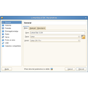
Pas 1. A la opció General no tocarem res.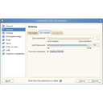
Pas 2. Al sistema triarem la pestanya Processador i activarem el PAE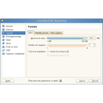
Pas 3. A la opció Pantalla, incrementarem la memòria de vídeo fins el màxim 128 MB.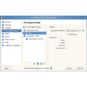
Pas 4. A la opció Emmagatzematge, triarem la el lloc on tenim la imatge de linkat . Ho podem fer més endavant.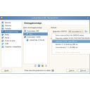
Si encara no la hem descarregada ho podem fer més endavant.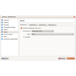
Pas 5. A la opció Xarxa, triarem que utilitzi l'adaptador pont


Llicenciat sota la Llicència Creative Commons Reconeixement NoComercial CompartirIgual 4.0